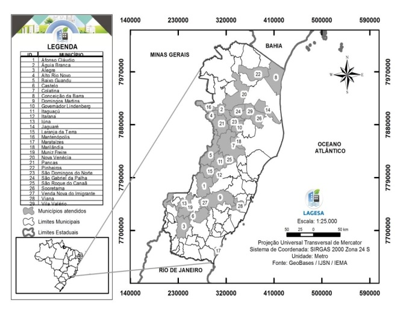
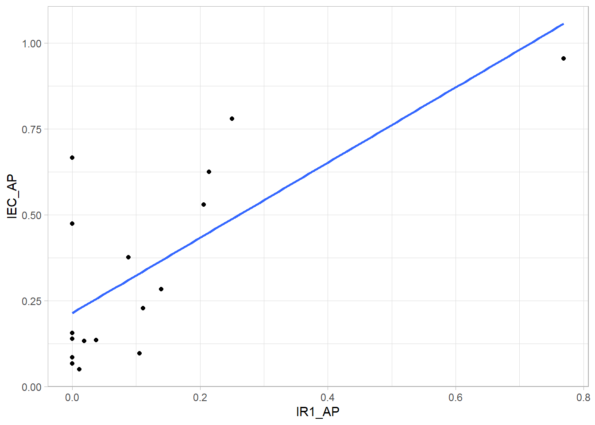
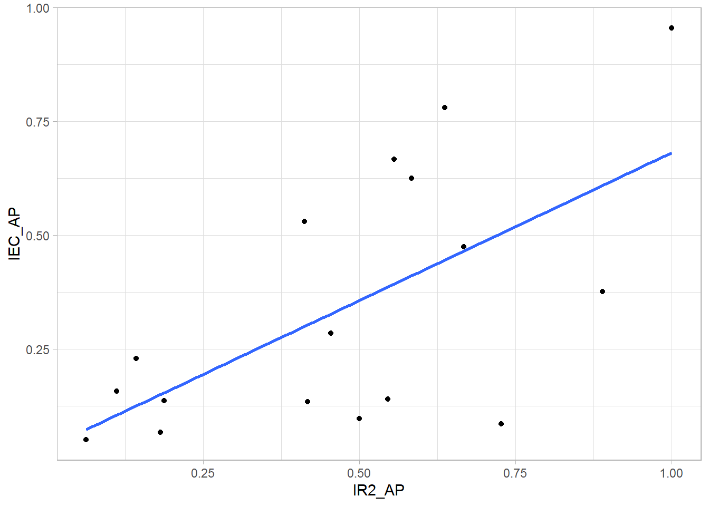
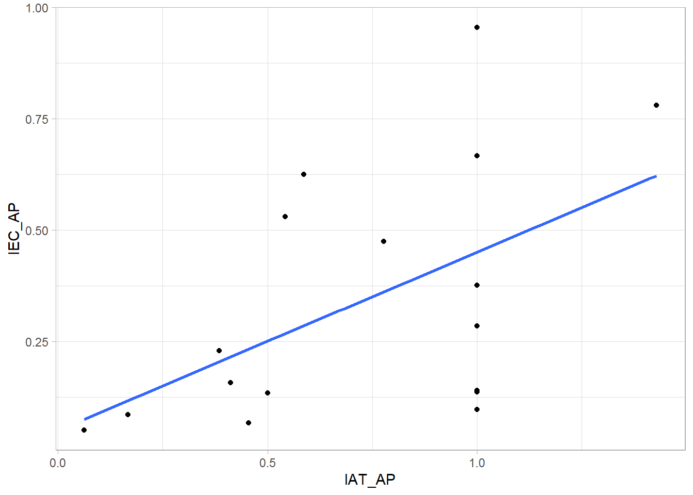
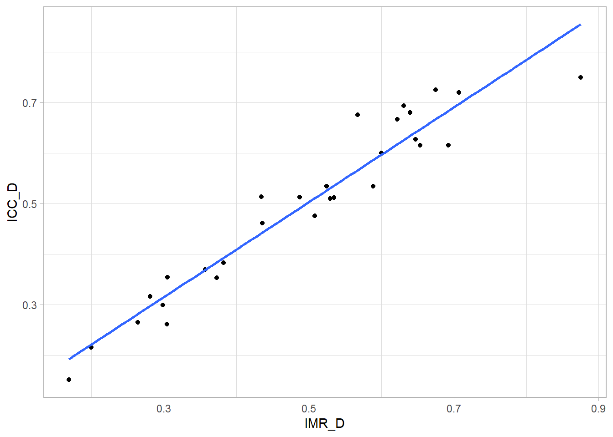
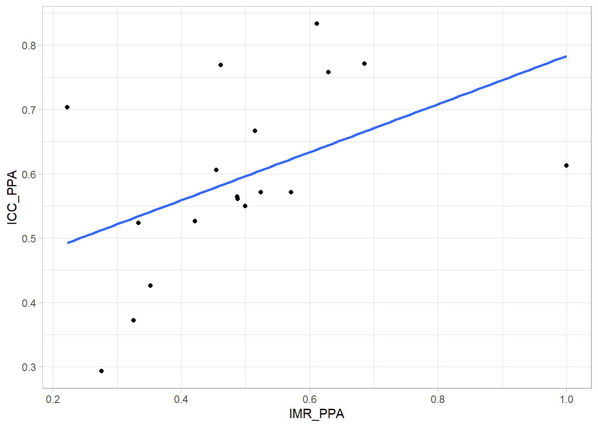
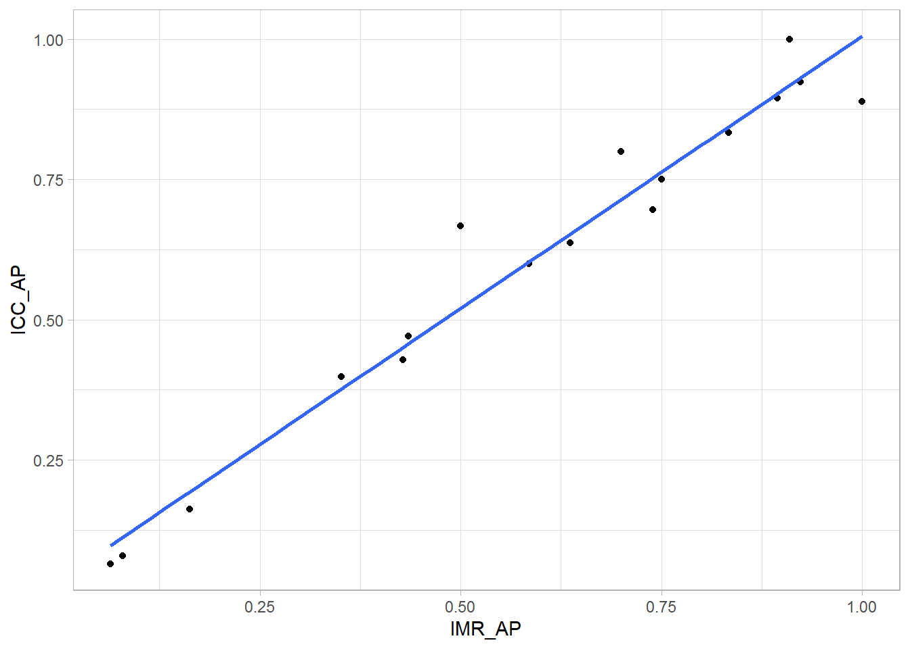
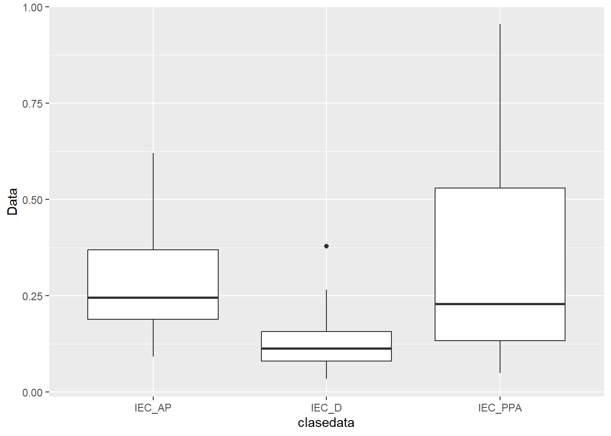

Tabela 1. Tamanho populacional dos municípios do Estado do Espírito Santo avaliados no presente estudo.Trabalho Final - Relatórios reprodutíveis com R - USP
Introdução
O presente trabalho foi desenvolvido por Rodrigo Pratte Santos em 2024, como parte integrante do curso intitulado “Relatórios Reprodutíveis com R - EaD”, oferecido pela Universidade de São Paulo (USP) e ministrado pela professora Beatriz Milz. A análise se baseia em dados previamente coletados por Juliana Carneiro Botelho Corrêa em sua dissertação intitulada “Proposta metodológica de Indicadores de Participação Social nos processos de elaboração dos Planos Municipais de Saneamento Básico (PMSB) e Planos Municipais de Gestão Integrada de Resíduos Sólidos (PMGIRS) dos municípios do estado do Espírito Santo”, conduzida sob a orientação do professor Dr. Renato Ribeiro Siman em 2017.
Metodologia
Este documento apresenta o relatório da proposta metodológica de Indicadores de Participação Social nos processos de elaboração dos Planos Municipais de Saneamento Básico (PMSB) e Planos Municipais de Gestão Integrada de Resíduos Sólidos (PMGIRS) nos municípios do estado do Espírito Santo. O estudo abrange um total de 29 municípios, examinando 36 variáveis relevantes para esses processos.
Os dados foram meticulosamente extraídos e analisados dos seguintes municípios: Afonso Claudio, Aguia Branca, Alegre, Alto Rio Novo, Baixo Guandu, Castelo, Colatina, Conceicao da Barra, Domingos Martins, Governador Lindemberg, Itaguacu, Itarana, Iuna, Jaguare, Laranja daTerra, Mantenopolis, Marataizes, Marilandia, Muniz Freire, Nova Venecia, Pancas, Pinheiros, Sao Domingos do Norte, Sao Gabriel da Palha, Sao Roque do Canaa, Sooretama, Venda Nova do Imigrante, Viana e Vila Valerio.
O tamanho populacional desses municípios variou entre 7888 e 121670 habitantes, resultando em uma população total estudada de 811934 (conforme detalhado na Tabela 1).

Resultados
Foram conduzidas análises detalhadas de correlação, acompanhadas de gráficos de dispersão, seguidas da aplicação de modelos de regressão linear para avaliar minuciosamente a natureza e a robustez das relações entre as variáveis investigadas. Os resultados revelaram correlações significativas entre as variáveis, indicando a presença de fatores compartilhados (Bertossi et al. 2013). Este achado é particularmente importante, pois oferece insights valiosos sobre a interdependência das variáveis em estudo. Notavelmente, os gráficos de dispersão apresentam uma clara tendência de correlação positiva, evidenciando visualmente a direção e a intensidade dessas associações cruciais.
planilha_dados |>
ggplot(aes(x = IR1_AP, y = IEC_AP)) +
geom_point() +
geom_smooth(method = lm,
se = F) +
theme_light()
Para confirmar a possível relação linear da figura 1, aplicamos o modelo lm(regressão linear model) para as variáveis (IR1_AP e IEC_AP) onde a variável regressora é IR1_AP, e a preditiva é IEC_AP.
model1 <- lm(planilha_dados$IEC_AP ~ planilha_dados$IR1_AP)
summary(model1)
Call:
lm(formula = planilha_dados$IEC_AP ~ planilha_dados$IR1_AP)
Residuals:
Min 1Q Median 3Q Max
-0.23307 -0.11932 -0.08317 0.08975 0.45211
Coefficients:
Estimate Std. Error t value Pr(>|t|)
(Intercept) 0.21456 0.05658 3.792 0.001772 **
planilha_dados$IR1_AP 1.09523 0.26165 4.186 0.000795 ***
---
Signif. codes: 0 '***' 0.001 '**' 0.01 '*' 0.05 '.' 0.1 ' ' 1
Residual standard error: 0.1978 on 15 degrees of freedom
(12 observations deleted due to missingness)
Multiple R-squared: 0.5388, Adjusted R-squared: 0.508
F-statistic: 17.52 on 1 and 15 DF, p-value: 0.0007953planilha_dados |>
ggplot(aes(x = IR2_AP, y = IEC_AP)) +
geom_point() +
geom_smooth(method = lm,
se = F) +
theme_light()
Para confirmar a possível relação linear da figura 2, aplicamos o modelo lm(regressão linear model) para as variáveis (IR2_AP e IEC_AP) onde a variável regressora é IR2_AP, e a preditiva é IEC_AP.
model2 <- lm(planilha_dados$IEC_AP ~ planilha_dados$IR2_AP)
summary(model2)
Call:
lm(formula = planilha_dados$IEC_AP ~ planilha_dados$IR2_AP)
Residuals:
Min 1Q Median 3Q Max
-0.4192 -0.1691 -0.0178 0.2143 0.3349
Coefficients:
Estimate Std. Error t value Pr(>|t|)
(Intercept) 0.03183 0.11314 0.281 0.78230
planilha_dados$IR2_AP 0.64942 0.20822 3.119 0.00704 **
---
Signif. codes: 0 '***' 0.001 '**' 0.01 '*' 0.05 '.' 0.1 ' ' 1
Residual standard error: 0.2268 on 15 degrees of freedom
(12 observations deleted due to missingness)
Multiple R-squared: 0.3934, Adjusted R-squared: 0.3529
F-statistic: 9.728 on 1 and 15 DF, p-value: 0.00704planilha_dados |>
ggplot(aes(x = IAT_AP, y = IEC_AP)) +
geom_point() +
geom_smooth(method = lm,
se = F) +
theme_light()
Para confirmar a possível relação linear da figura 3, aplicamos o modelo lm(regressão linear model) para as variáveis (IAT_AP e IEC_AP) onde a variável regressora é IAT_AP, e a preditiva é IEC_AP.
model3 <- lm(planilha_dados$IEC_AP ~ planilha_dados$IAT_AP)
summary(model3)
Call:
lm(formula = planilha_dados$IEC_AP ~ planilha_dados$IAT_AP)
Residuals:
Min 1Q Median 3Q Max
-0.35377 -0.16547 -0.03196 0.15785 0.50451
Coefficients:
Estimate Std. Error t value Pr(>|t|)
(Intercept) 0.05012 0.13617 0.368 0.7179
planilha_dados$IAT_AP 0.40042 0.16860 2.375 0.0313 *
---
Signif. codes: 0 '***' 0.001 '**' 0.01 '*' 0.05 '.' 0.1 ' ' 1
Residual standard error: 0.2482 on 15 degrees of freedom
(12 observations deleted due to missingness)
Multiple R-squared: 0.2733, Adjusted R-squared: 0.2248
F-statistic: 5.64 on 1 and 15 DF, p-value: 0.03132planilha_dados |>
ggplot(aes(x = IMR_D, y = ICC_D)) +
geom_point() +
geom_smooth(method = lm,
se = F) +
theme_light()
Para confirmar a possível relação linear da figura 4, aplicamos o modelo lm(regressão linear model) para as variáveis (IMR_D e ICC_D) onde a variável regressora é IMR_D, e a preditiva é ICC_D.
model4 <- lm(planilha_dados$ICC_D ~ planilha_dados$IMR_D)
summary(model4)
Call:
lm(formula = planilha_dados$ICC_D ~ planilha_dados$IMR_D)
Residuals:
Min 1Q Median 3Q Max
-0.105038 -0.030232 -0.005744 0.021949 0.109355
Coefficients:
Estimate Std. Error t value Pr(>|t|)
(Intercept) 0.03330 0.02686 1.24 0.226
planilha_dados$IMR_D 0.93913 0.05149 18.24 <0.0000000000000002 ***
---
Signif. codes: 0 '***' 0.001 '**' 0.01 '*' 0.05 '.' 0.1 ' ' 1
Residual standard error: 0.0475 on 27 degrees of freedom
Multiple R-squared: 0.9249, Adjusted R-squared: 0.9222
F-statistic: 332.7 on 1 and 27 DF, p-value: < 0.00000000000000022planilha_dados |>
ggplot(aes(x = IMR_PPA, y = ICC_PPA)) +
geom_point() +
geom_smooth(method = lm,
se = F) +
theme_light()
Para confirmar a possível relação linear da figura 5, aplicamos o modelo lm(regressão linear model) para as variáveis (IMR_PPA e ICC_PPA) onde a variável regressora é IMR_PPA, e a preditiva é ICC_PPA.
model5 <- lm(planilha_dados$IMR_PPA ~ planilha_dados$ICC_PPA)
summary(model5)
Call:
lm(formula = planilha_dados$IMR_PPA ~ planilha_dados$ICC_PPA)
Residuals:
Min 1Q Median 3Q Max
-0.33355 -0.04338 -0.01936 0.03965 0.49665
Coefficients:
Estimate Std. Error t value Pr(>|t|)
(Intercept) 0.1495 0.1678 0.891 0.3860
planilha_dados$ICC_PPA 0.5773 0.2753 2.097 0.0522 .
---
Signif. codes: 0 '***' 0.001 '**' 0.01 '*' 0.05 '.' 0.1 ' ' 1
Residual standard error: 0.1621 on 16 degrees of freedom
(11 observations deleted due to missingness)
Multiple R-squared: 0.2156, Adjusted R-squared: 0.1666
F-statistic: 4.398 on 1 and 16 DF, p-value: 0.05222planilha_dados |>
ggplot(aes(x = IMR_AP, y = ICC_AP)) +
geom_point() +
geom_smooth(method = lm,
se = F) +
theme_light()
Para confirmar a possível relação linear da figura 6, aplicamos o modelo lm(regressão linear model) para as variáveis (IMR_PPA e ICC_PPA) onde a variável regressora é IMR_AP, e a preditiva é ICC_AP.
model6 <- lm(planilha_dados$IMR_AP ~ planilha_dados$ICC_AP)
summary(model6)
Call:
lm(formula = planilha_dados$IMR_AP ~ planilha_dados$ICC_AP)
Residuals:
Min 1Q Median 3Q Max
-0.14834 -0.01916 0.01269 0.02019 0.13193
Coefficients:
Estimate Std. Error t value Pr(>|t|)
(Intercept) -0.01088 0.03531 -0.308 0.762
planilha_dados$ICC_AP 0.98882 0.05269 18.765 0.00000000000793 ***
---
Signif. codes: 0 '***' 0.001 '**' 0.01 '*' 0.05 '.' 0.1 ' ' 1
Residual standard error: 0.06242 on 15 degrees of freedom
(12 observations deleted due to missingness)
Multiple R-squared: 0.9591, Adjusted R-squared: 0.9564
F-statistic: 352.1 on 1 and 15 DF, p-value: 0.000000000007927Ao analisar o gráfico abaixo (Figura 7), verificou-se uma diferença estatisticamente significativa no Indicador de Eficácia da Comunicação (IEC) quando avaliado em três contextos distintos: Audiência Pública (AP), Planos, Projetos e Ações (PPA), e Diagnóstico Participativo (DP), conforme demonstrado pelo teste de ANOVA (p=0.000351). Uma análise mais aprofundada revelou que os níveis de IEC em AP e PPA divergiram significativamente daqueles observados em DP (p=0.0079288 e p=0.0007661, respectivamente). No entanto, não foi identificada uma diferença estatisticamente significativa entre AP e PPA (p=0.7409426), conforme constatado pelo teste de Tukey. Esses achados destacam nuances distintas na eficácia da comunicação em diferentes estágios dos processos de participação pública, fornecendo insights valiosos para aprimorar estratégias de engajamento comunitário e tomada de decisões participativas.
Data1<-planilha_dados$IEC_D
Data2<-planilha_dados$IEC_AP
Data3<-planilha_dados$IEC_PPA
Data<-c(Data1,Data2,Data3)
clasedata<-c(rep('IEC_D',29),rep('IEC_PPA',29),rep("IEC_AP",29))
base<-cbind.data.frame(Data,clasedata)
ggplot(base,
aes(x = clasedata,
y = Data))+
geom_boxplot()
anova_result <- aov(Data ~ clasedata, data = base)
summary(anova_result) Df Sum Sq Mean Sq F value Pr(>F)
clasedata 2 0.567 0.2835 9.087 0.000351 ***
Residuals 61 1.903 0.0312
---
Signif. codes: 0 '***' 0.001 '**' 0.01 '*' 0.05 '.' 0.1 ' ' 1
23 observations deleted due to missingnesstukey_result <- TukeyHSD(anova_result)
print(tukey_result) Tukey multiple comparisons of means
95% family-wise confidence level
Fit: aov(formula = Data ~ clasedata, data = base)
$clasedata
diff lwr upr p adj
IEC_D-IEC_AP -0.16475701 -0.29208359 -0.03743043 0.0079288
IEC_PPA-IEC_AP 0.04418988 -0.09931897 0.18769874 0.7409426
IEC_PPA-IEC_D 0.20894689 0.07933023 0.33856356 0.0007661References
Bertossi, Ana Paula Almeida, João Paulo Cunha de Menezes, Roberto Avelino Cecílio, Giovanni De Oliveira Garcia, and Mirna Aparecida Neves. 2013. “Seleção e Agrupamento de Indicadores Da Qualidade de Águas Utilizando Estatística Multivariada.” Semina: Ciências Agrárias 34 (5): 2025. https://doi.org/10.5433/1679-0359.2013v34n5p2025.